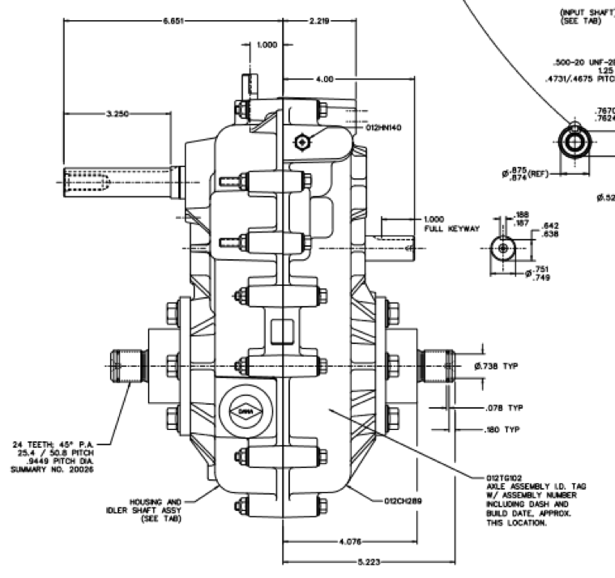
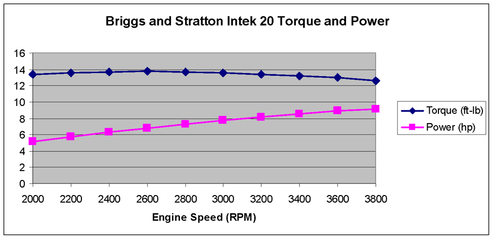

Technical
Our Teams
The SPU Baja SAE Falcon Racing team is divided up into 5 major systems of the car. They are led by a student who has been on the team for at least a year, or has extensive experience in that particular system of the car.
Chassis
As the main structural component of the car, the chassis team works with all other technical teams in order to seamlessly integrate each system into a completed Baja SAE vehicle. Members on chassis team must do analysis in Ansys Explicit Dynamics to simulate crash scenarios and therefore help validate chassis geometry. Furthermore, chassis team members must work closely with the driver interface team to maximize in-car comfort. The chassis goes through extensive design iterations, combining structural analysis, driver ergonomics, vehicle packaging, and process build plans to ensure we have the most structurally sound, lightweight, and easy to assemble chassis. Additionally, care must be taken to comply with competition rules, all while achieving stiffness goals and ease of maintenance.
Suspension
The suspension team is in charge of components such as the control arms, hubs, uprights, wheels, tires, shocks, brakes, and steering. Placing in the dynamic events at competition is largely influenced by suspension geometry, thus making it one of the most critical aspects of the Baja SAE vehicle design. Design begins on the computer using suspension geometry software such as Dynatune-XL and AdamsCar. Various iterations are tried until an ideal setup is found.
Driver Interface
The driver interface team's job is to make anything the driver interacts with reliable, lightweight, innovative, and practical. Members are responsible for the driver's seat, steering wheel, pedal assembly, and dash.
Powertrain
The Powertrain team is responsible for engine testing and tuning, engine mounting, and maximizing the transfer of power from the engine to the wheels. They are restricted by competition rules in using a 10 HP Briggs and Stratton engine, but have enormous opportunities in terms of an intelligent and easily maintainable engine mounting system, as well as the development of a custom Continuously Variable Transmission (CVT) and CV/Halfshaft design.
Electronics
The electronics team carries out all electrical projects on the car. These include wiring, driver interface control electronics (dash, HUD, etc.), data telemetry, a driver communication system, and the incorporation of a vast array of sensors, including, but not limited to: Strain gauge sensors, steering position sensors, yaw rate sensors, temp sensors, wheel speed sensors, and gear position sensors.